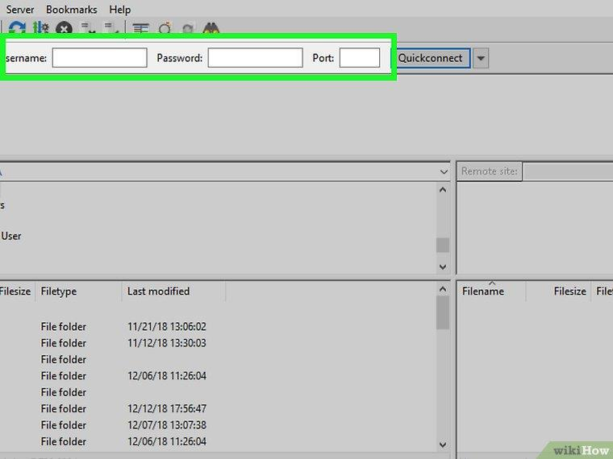

<!DOCTYPE html>
<!-- saved from url=(0062)file:///C:/Users/shukla/Desktop/google%20pages/googlepage.html -->
<html><head><meta http-equiv="Content-Type" content="text/html; charset=UTF-8">
	<title>google page</title>
	<link rel="stylesheet" type="text/css" href="./page6_files/css.css">
	
	<meta name="viewport" content="width=device-width, initial-scale=1">
	<link href="./page6_files/css2" rel="stylesheet">
	<link rel="stylesheet" href="./page6_files/bootstrap.min.css">
	<link href="./page6_files/css2" rel="stylesheet">
	<script src="./page6_files/jquery.min.js.download"></script>
<script src="./page6_files/popper.min.js.download"></script>
<script src="./page6_files/bootstrap.min.js.download"></script>
</head>
<body>

<h4 class="h3">(2) Understand the parts of an FTP address.</h4>
<p class="para">When you come across 
FTP addresses on a webpage, they are usually denoted in the same way 
as a usual webpage address—with a couple of exceptions:
For example, you might see ftp.example.com:21. This means that the 
address is ftp.example.com and the port used is 21. You will need both of 
these when connecting to the FTP server.</p>

<h4 class="h4">(1) Learn how FTP differs from HTTP.</h4> 

<p class="para">. FTP stands for File Transfer 
Protocol, and is a connection method designed for transferring files from a 
remote server to local computer, and vice versa. FTP is often used in 
corporate and academic settings, and is the primary way of managing 
webpage servers.
While HTTP (Hypertext Transfer Protocol) allows for file transfers, it is not as 
robust as FTP transfers.</p> 

<h4 class="h3">If the FTP requires a username, it may be written 
as username@ftp.example.com:21 where "username" is the required 
name.[1] </h4>
<p class="para">If no username is specified, then you will usually need to enter "anonymous" as the 
username when you connect. Note that you are not actually anonymous when you 
connect to a public FTP; the host can see your IP address.</p>
<div class="backimg">
	
	
</div>

<h3 class="h3">(3 )Determine how you prefer to connect.</h3> 

<p class="para">There are three main ways to 
connect to FTP servers: via visual clients, via browser-based clients, or 
through the command line. Downloading and installing a visual client is the 
most widely used and easiest way to connect to an FTP, and also affords 
you the most power and control over the process. The majority of this guide 
will focus on using an FTP client.−</p>
<div class="backimg">
	
	
</div>

<h3 class="h3">Connecting to an FTP Server</h3>


<h3 class="h3">(1) Download FileZilla</h3> 

<p class="para">Using a client to connect will often lead to faster 
uploads and downloads to the FTP server, and FileZilla is one of the most 
popular FTP servers available. To download it, go to https://filezillaproject.org in your computer's web browser, then do the following:<br>
Click Download FileZilla Client<br>
Click Download FileZilla Client on the subsequent page.<br>
Click the green Download button below the "FileZilla" heading<br>.
FileZilla is the example for this article, but you can use virtually any FTP client in 
the same way.</p>

<div class="backimg">
	
	
</div>

<h4 class="h3">(2) Install FileZilla.</h4>

<p class="para">. This process will vary depending on your computer's 
operating system:<br>
Windows — Double-click the downloaded FileZilla setup file, click Yes when 
prompted, click I agree, click Next four times, uncheck the box on the Driver 
Update page, click Next, uncheck the box on the WinZIP page, and click Next.<br>
Mac — Double-click the downloaded FileZilla DMG file, click and drag the 
FileZilla app icon onto the "Applications" folder icon, and follow any on-screen 
instructions until FileZilla begins installing.</p> 

<div class="backimg">
	
	
</div>

<h4 class="h3">(3) Open FileZilla.</h4>
<p class="para">Once FileZilla is installed, click Finish with the "Start 
FileZilla now" box checked, or double-click the FileZilla app icon on the 
desktop (Windows) or in the Applications folder (Mac) to open it.</p>


<div class="backimg">
	
	
</div>

<h4 class="h3">(4) Enter your FTP server's information.</h4>

<p class="para">At the top of the FileZilla 
window, fill out the following fields:<br>
Host — This is where the FTP address goes.<br>
Username — You'll enter the login username here (if there is no username, 
enter anonymous).<br>
Password — The password to log into the FTP server goes here (leave blank if 
there isn't a password).<br>
Port — The FTP server's port number goes here.</p>

<div class="backimg">
	
	
</div>

<h4 class="h3">(5) Click Quickconnect.</h4>

<p class="para">. It's near the upper-right corner of the FileZilla 
window. FileZilla will begin connecting to your server.</p>

<div class="backimg">
	
	
</div>

<h4 class="h3">(6)Review the FTP server's contents.</h4>

<p class="para">. Once you are connected, you will 
see the FTP directory tree on the right side of the window. The top frame 
shows the tree structure, while the bottom frame shows the contents of 
each folder. At this point, you're ready to begin uploading and downloading 
files.<br>
Each time you change folders, a small command is sent to the server. This means 
there will be a slight delay when moving between folders.<br>
You can enter in an exact location in the bar at the top of the right side.<br>
If you don't have permission for certain directories, you will receive an error when 
you try to access them.</p>


<div class="container pagination-lg">
		<ul class="pagination">
			<li class="page-item"><a href="../index.html" class="page-link"> previous </a></li>
			<li class="page-item active"><a href="../pages/page 1.html" class="page-link"> 1 </a></li>
			<li class="page-item"><a href="../pages/page2.html" class="page-link"> 2 </a></li>
			<li class="page-item"><a href="../pages/page3.html" class="page-link"> 3 </a></li>
			<li class="page-item"><a href="../pages/page4.html" class="page-link"> 4 </a></li>
			<li class="page-item"><a href="../pages/page5.html" class="page-link"> 5 </a></li>
			<li class="page-item"><a href="../pages/page6.html" class="page-link"> 6 </a></li>
			<li class="page-item"><a href="#" class="page-link"> Next </a></li>

		</ul>
		
	</div>


</body></html>